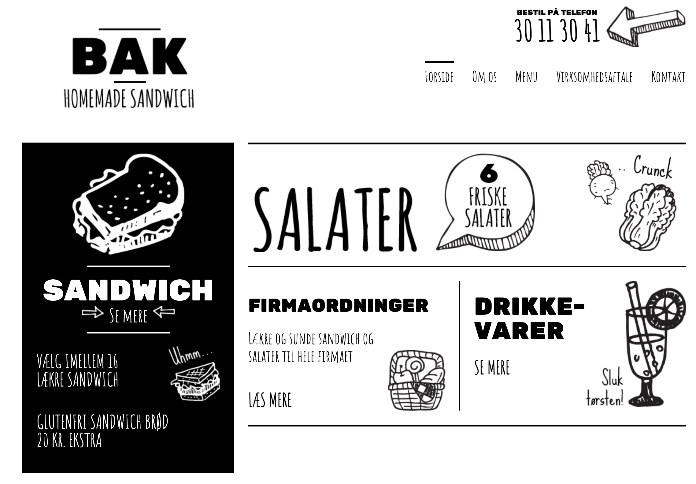
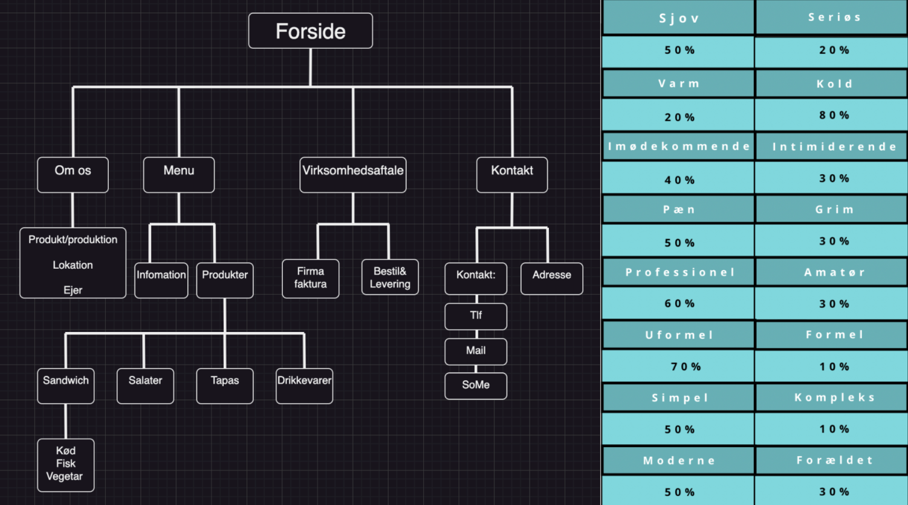
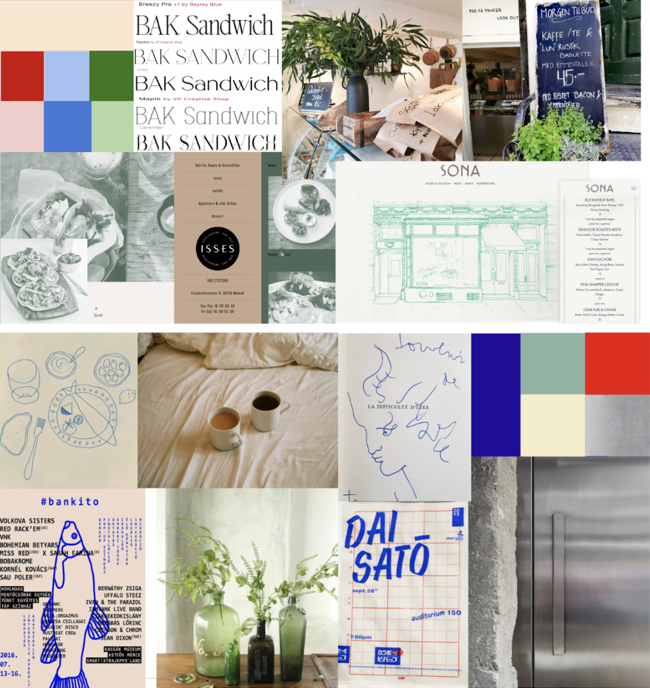
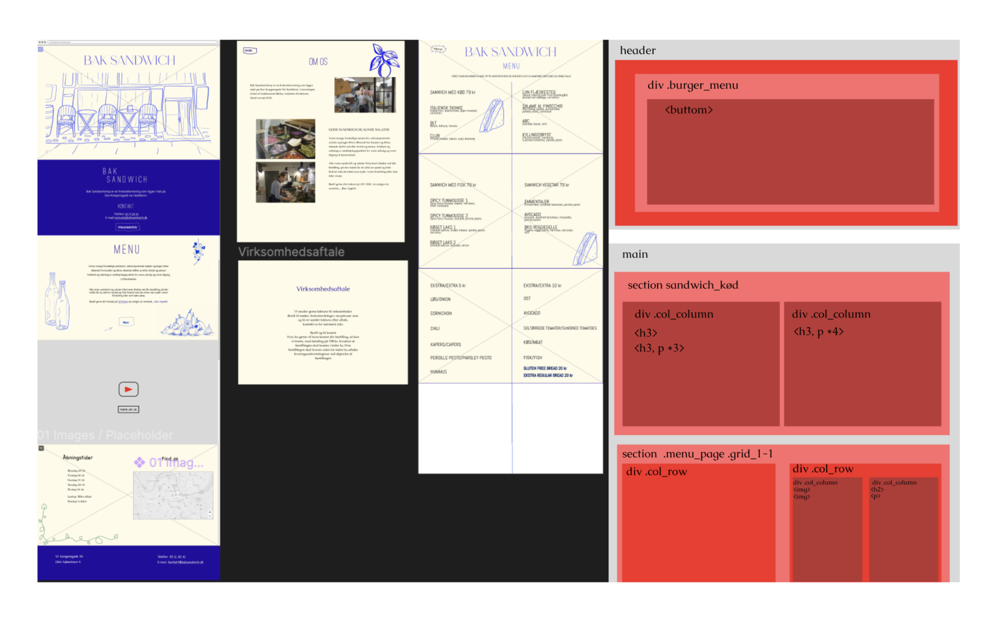
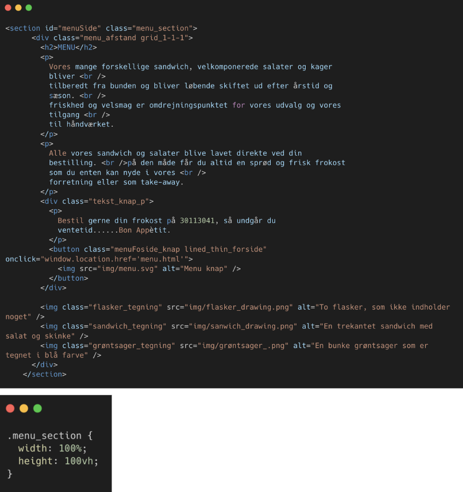
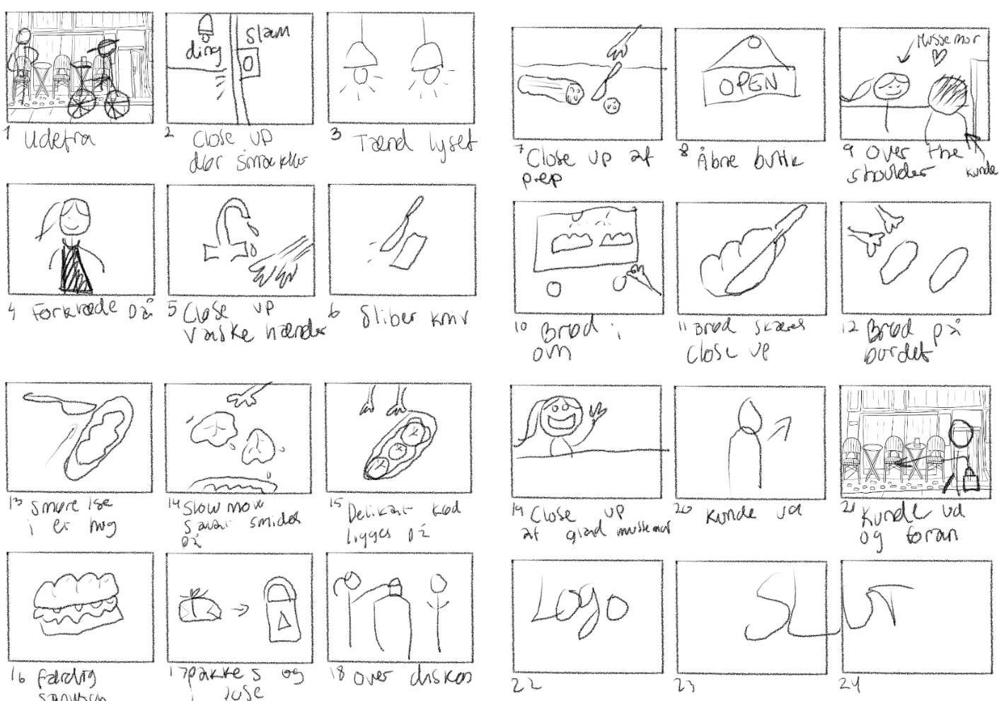
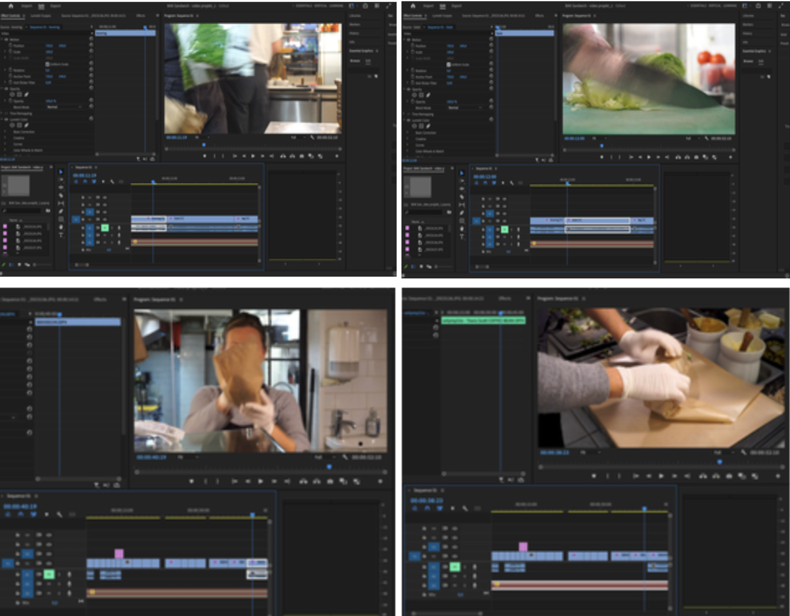

BACK
BASIC CONTENT
Redesigning a business website
The last theme of the semester was also the first group project. With an introduction to KEA's library, where one can borrow all sorts of equipment, and a walkthrough of Adobe Premier, we were to combine our previous learning for the semester's largest project.
Our task was to select a company to develop and redesign their existing website. We chose a small sandwich deli named BAK SANDWICH.
Research
We began by examining the current website and the business concept of the company to identify any potential shortcomings. We created a sitemap and conducted a BERT test on our fellow students to gather their immediate impressions of the website.
Moodboards and Style Tile
As in previous projects, we created mood boards, this time keeping the client's wishes in mind (the owner of BAK). This was followed by a wireframe, which served as the foundation for building our prototype.
 Coding
This piece of code has been a crucial element in the construction of our website, serving as the foundation for manipulating the height of our web pages. This manipulation allows us to create various heights, displaying content either as a full page or as a smaller box containing information..
Video and Editing
As part of the new design, we shot a mood video of a typical day in the business. For preparation, we created a storyboard to make the recording process more manageable and efficient. The post-production of the footage was edited in Premiere Pro, where we utilized various editing techniques, including clip-in-motion.
 